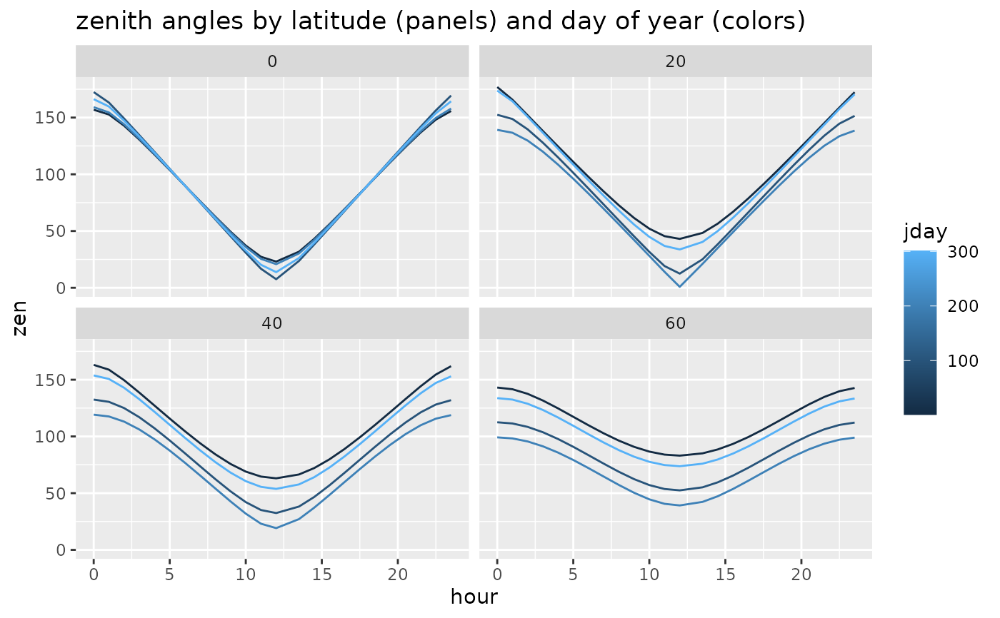

Calculate zenith angle as in http://education.gsfc.nasa.gov/experimental/July61999siteupdate/inv99Project.Site/Pages/solar.insolation.html
Source:R/calc_solar_insolation.R
calc_zenith_angle.RdCalculate zenith angle as in http://education.gsfc.nasa.gov/experimental/July61999siteupdate/inv99Project.Site/Pages/solar.insolation.html
Usage
calc_zenith_angle(
latitude,
declination.angle,
hour.angle,
format = c("degrees", "radians")
)Arguments
- latitude
Numeric value or vector indicating the site latitude in decimal degrees (never radians or deg-min-sec, no matter what
formatis) between -90 (South Pole) and 90 (North Pole).- declination.angle
Numeric value or vector, in the units specified by
format, indicating the declination angle.- hour.angle
Numeric value or vector, in the units specified by
format, indicating the angle.- format
The format of both the output. May be "degrees" or "radians".
Examples
zendf <- data.frame(
lat=rep(c(0,20,40,60), each=24*4),
jday=rep(rep(c(1,101,201,301), each=24), times=4),
hour=rep(c(0:12,13.5:23.5), times=4*4))
zendf <- transform(zendf,
dec=streamMetabolizer:::calc_declination_angle(jday),
hragl=streamMetabolizer:::calc_hour_angle(hour))
zendf <- transform(zendf,
zen=streamMetabolizer:::calc_zenith_angle(lat, dec, hragl))
library(ggplot2)
ggplot(zendf, aes(x=hour, y=zen, color=jday, group=jday)) +
geom_line() + facet_wrap(~lat) +
ggtitle('zenith angles by latitude (panels) and day of year (colors)')
